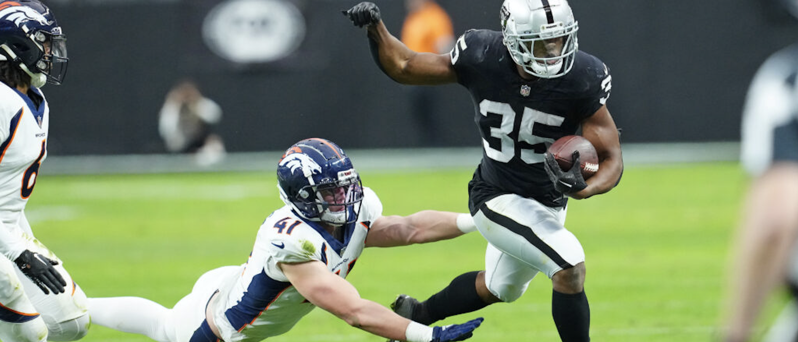

Date: 10/06/22
Is the Running Back Position Losing Value in the NFL and Fantasy Football?
Background
Fantasy Football is an increasingly popular form of friendly competition where groups of friends select NFL players in a snake-draft format and face off against each other each week for bragging rights and maybe even a jackpot prize. Participants in a fantasy football league are called Fantasy General Managers (GMs) and each week a GM's selected NFL players earn them points based on their performance statistics in that weeks game: A touchdown will earn that player (and the GM) 6 points, every 10 yards earned by a player in-game earns the GM 1 point, etc. A GM's goal is to score more points than their paired opponent each week and eventually win the championship. The relevant player positions in Fantasy Football are Quarterbacks (QBs), Wide Receivers (WRs), Running Backs (RBs), and Tight Ends (TEs). GMs must have 1 QB, 2-3 RBs, 2-3 WRs, and 1 TE on their team. A few details have been omitted, but this should cover the background required to understand the analysis.
Body
It's no secret that the National Football league is constantly changing, as coaches and general managers must do their best to be a step ahead of their competition. In recent years, teams have been passing the football much more often than they did in the past. The spread formation is becoming standard, running backs are being paid less, and the fullback position is just about extinct. This evolution of the game is being noticed in Fantasy Football as well: Fantasy GMs have coveted Running Backs with respectable statistics in recent years because the general consensus is that they're becoming increasingly scarce. In fact, this has gone so far that a new trend has emerged that has caused Fantasy GMs to shift perspective. They are no longer valuing running backs as highly because valuable Running Backs are no longer scarce, they're nonexistent. At least, so they say. This analysis investigates the previous claim. Is the Running Back position diminishing in value as a whole?
The dataset used for this analysis was acquired from github, a repository by fantasydatapros containing many different datasets related to yearly NFL Fantasy statistics. Specifically, the dataset used for this analysis was the result of appending 10 datasets that each contain Player names, positions, age, performance statistics, and of course, fantasy points for a specific year. Observations begin in 2012 and contain up to the 2021 season. This dataframe contains 6,286 rows and 21 columns, however, we filter this dataframe to only include players who score over 180 fantasy points in one season. This is because players who score less points in a given season are not considered to be relevant and are not usually selected by fantasy GMs. Here we are most interested in position, positional mean/median fantasy points scored, and year as we are tracking chronological data.
As we begin our analysis, we'd like to track the performance of the running back position as a whole throughout the years. To do so, we take the median points scored for the position as a whole and plot it for each year. We also include other positions to verify whether any positional trends are isolated or part of a league-wide trend

Here we see that the median points scored among running backs oscillates mildly from 2012 to 2018, but then we see a constant drop year after year. It's possible that this is part of the oscillating pattern, but we must not be careful not to extrapolate. The 2022 season will be very telling. We also see that wide receivers experienced a similar recession in points, possibly a league-wide trend due to the covid pandemic, but the wide receiver position was still able to recover quite well in the following season. Unsurprisingly, the quarterback position is miles above as they are involved in every offensive play.
While the last graphic was very intuitive, we can still miss out on important context when focusing on just one summary statistic such as the median. Because wide receivers are very comparable to running backs points-wise in the last graphic, we will now directly compare the two in terms of total fantasy points scored. The following bar graph counts the total number of players that exceeded 180 points within a given year and compares the proportion of those players that are running backs and wide receivers. If running backs are indeed diminishing in performance and abundance, then we should expect wide receivers to consume more and more of this proportion as time progresses.

However, we don't exactly get the results we were expecting. Wide receivers may hold the majority of relevant players in most years, but the data suggests a major shift in during the 2020 and 2021 seasons. These results support the claim that running backs are less valuable in general (for most years), but we were specifically looking for a regression for the running back position in recent years. The data suggests the opposite here.
After analysis, our findings are inconclusive. We saw a glimpse of the suspected downward trend for the running back position in our line graph, but were surprised to find an opposing trend from our bar graph. It could be that the regression of the running back position is a myth, or it could be that we're currently witnessing the change and must allow more time to pass to receive any concrete evidence.